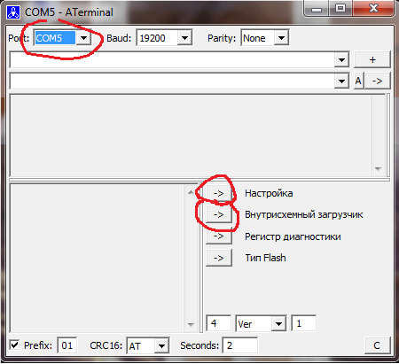
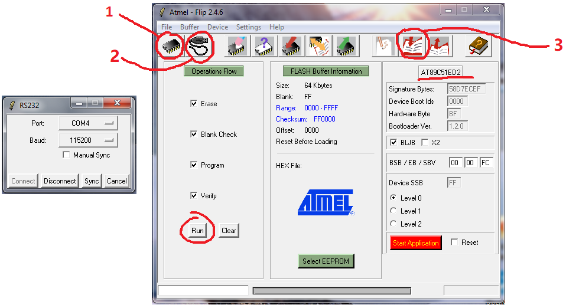

БДКГ-35. Прошивка
- Запустить Terminal 
- Выбрать порт
- Нажать "Настройка"
- Нажать "Внутрисхемный загрузчик"
- Закрыть Terminal
- Открыть Flip 
- Подключиться (выбрать порт)[1]
- Выбрать контроллер[2]
- Выбрать прошивку (Актуальная версия — 26.05.2017)[3]
- Run
- Снять BLJB
- Установить Level 2